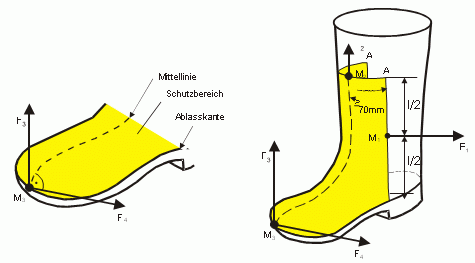

Die Gamasche darf sich nicht unbeabsichtigt lösen können, wenn sie entsprechend der Herstellerinformation angelegt wird.
| Zugversuch: | - Zugrichtung seitlich, senkrecht zum Bein am Kraftangriffspunkt M1 mit einer Kraft (F1) von 10 N und einer Dauer von 10 (siehe Bild 10) | |
| Anforderung | - zulässige Verformung nach Entlastung ≤ 5 mm | |
| Zugversuch: | - Zugrichtung parallel zum Bein am Kraftangriffspunkt M2 mit einer Kraft (F2) von 10 N und einer Dauer von 10 s (siehe Abbildung 1) | |
| Anforderung | - zulässige Verformung nach Entlastung ≤ 5 mm |
Es ist die kleinste und größte Gamasche mit den jeweiligen Größen des Fußschutzes gegebenenfalls auch mit der zugehörigen Schutzkleidung zu prüfen (siehe Herstellerinformation).
Die Gamasche bzw. die Befestigung der Gamasche darf keine Verletzungen verursachen können.
Optische Prüfung bzw. Prüfung durch Tasten
| Anforderung: | Die Gamascheninnenseite bzw. die Befestigung der Gamasche, die mit der Haut/Hose/dem Fußschutz in Berührung kommt, muss frei von Unebenheiten, scharfen Kanten sein. Falls bei den Schuhformen A, B, C die Befestigung der Gamaschen mittels Bänder erfolgt, müssen diese Bänder in Längs- und Querrichtung elastisch sein. |
Metrische Prüfung:
| Anforderung: | Falls bei den Schuhformen A, B, C die Befestigung der Gamaschen mittels Bänder erfolgt, müssen diese Bänder mindestens 40 mm breit sein. |
Es ist die kleinste und größte Gamasche zu prüfen.
Die Befestigung der Gamasche muss stufenlos individuell verstellbar sein. Optische Prüfung bzw. Gebrauchsanweisung überprüfen.
Es ist die kleinste und größte Gamasche zu prüfen.
Die Gamasche darf sich nicht unbeabsichtigt vom Fuß lösen können.
| Zugversuch: | - Zugrichtung nach oben, senkrecht zum Fuß am Kraftangriffspunkt M3 mit einer Kraft (F3) von 10 N und einer Dauer von 10 s (siehe Bild 10) | |
| Anforderung: | - zulässige Verformung nach Entlastung: ± 2 mm | |
| Zugversuch: | - Zugrichtung zur Seite, senkrecht zum Fuß am Kraftangriffspunkt M3 mit einer Kraft (F3) von 10 N und einer Dauer von 10 s (siehe Bild 10) | |
| Anforderung: | - zulässige Verformung nach Entlastung: ± 2 mm |
Es ist die kleinste und größte Gamasche mit den jeweiligen Größen des Fußschutzes zu prüfen.
Die Gamasche darf nicht selbst Stolper-, Rutsch- und Sturzunfälle auslösen können.
Optische Begutachtung
| Anforderung: | - keine Befestigung der Gamasche mit Bändern oder Ähnliches unter der Laufsohle, - keine unfallverursachenden vorstehenden/überstehenden Teile. |
Es ist die kleinste und größte Gamasche mit den jeweiligen Größen des Fußschutzes zu prüfen.
Metrische Prüfung der Passgenauigkeit zwischen Gamasche und Laufsohle des Fußschutzes
| Anforderung: | - maximale Abweichung der Gamasche zur Laufsohle im Bereich des Vorderfusses ≤ 2 mm, - maximale Abweichung der Gamasche zur Laufsohle im Gelenkbereich ≤ 2 mm. |
Es ist die kleinste und größte Gamasche mit den jeweiligen Größen des Fußschutzes zu prüfen.
Die Gamasche darf den Sitz bei Bewegung nicht wesentlich verändern können.
Trageversuch mit anschließender metrischer Prüfung
| Trageversuch: | - 10 m gehen - 5 Stufen steigen - 3 x hinknien und aufstehen |
|
| Anforderung: | Nach dem Trageversuch müssen die Anforderungen der Zugversuche und die Anforderungen an die Passgenauigkeit zwischen Gamasche und Laufsohle des Fußschutzes erfüllt sein. |
Es ist die kleinste und größte Gamasche mit den jeweiligen Größen des Fußschutzes zu prüfen.
Metrische und optische Prüfung
| Anforderung: | Die Gamasche muss einen durchgehenden Schutzbereich aufweisen, der den Blatt-, Laschen- und Zehenbereich des Schuhs abdeckt (siehe Bild 10). Der Schutzbereich wird zum Schaft hin begrenzt durch zwei vertikale Linien im Abstand von mindestens 70 mm beiderseits der Mittellinie der Gamasche, gemessen zwischen den Punkten A. Nach unten begrenzt die Ablasskante des Fußschutzes den Schutzbereich. Die Mindesthöhe des Schutzbereichs wird parallel zur Ablasskante gemessen, dabei dürfen die in Tabelle 14 angegebenen Werte nicht unterschritten werden. |

| Schuhgröße | Mindesthöhe l (mm) | ||||
| Französischer Stich |
Englisch | Form A, B, C | Form D, E | ||
| Klasse I | Klasse II | Klasse I | Klasse II | ||
| bis 36 | bis 3,5 | 100 | 172 | 100 | 195 |
| 37 und 38 | 4 bis 5 | 100 | 175 | 100 | 195 |
| 39 und 40 | 5, 5 bis 6,5 | 100 | 182 | 100 | 195 |
| 41 und 42 | 7 bis 8 | 100 | 188 | 100 | 195 |
| 43 und 44 | 8,5 bis 10 | 100 | 195 | 100 | 195 |
| 45 und größer | 11 und größer | 100 | 195 | 100 | 195 |
Tabelle 14: Mindesthöhe des Schutzbereiches der Gamasche in Abhängigkeit der Klassen
| Prüfung: | - Rückstoßkraft der Lanze 250 N - Düsengröße 1 mm Rundstrahldüse - Abstand der Düse zur Gamasche 75 mm - Vorschubgeschwindigkeit 0,2 m/s - Überfahren des Vorderfußes (hinter der Zehenschutzkappe) im Bereich des Rists |
|
| Anforderung: | Der Fußschutz unter der Gamasche darf keine optisch erkennbaren Beschädigungen aufweisen. Nach der Beaufschlagung mit dem Flüssigkeitsstrahl müssen die Anforderungen der Zugversuche und die Anforderungen an die Passgenauigkeit zwischen Gamasche und Laufsohle des Fußschutzes erfüllt sein. |
Es ist die kleinste und größte Gamasche mit dem jeweiligen Fußschutz zu prüfen.
Für die Durchführung der Baumusterprüfung sind jeweils zwei der kleinsten und größten Gamaschen mit den entsprechenden Größen des Fußschutzes bzw. der entsprechenden Schutzkleidung erforderlich.
Die vom Hersteller beizufügende Information muss mindestens alle zweckdienlichen Angaben enthalten über
Für eine verständlichere Darstellung der beizulegenden Informationen könnten Abbildungen hilfreich sein. Die Bedeutungen etwaiger Markierungen sind zu erläutern.